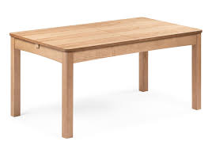
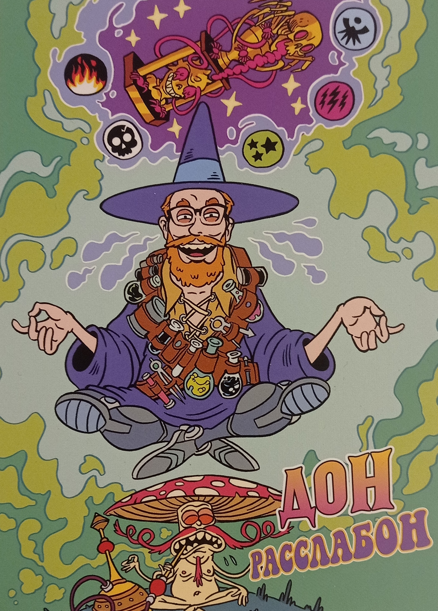
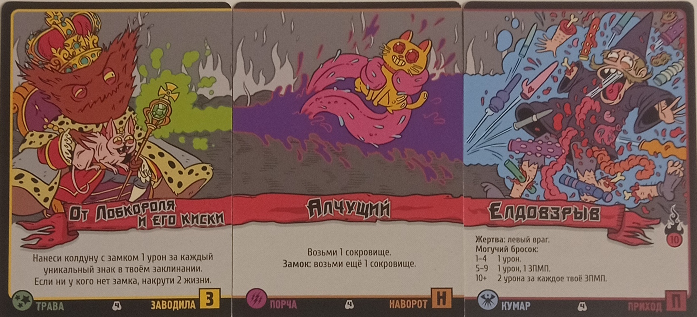
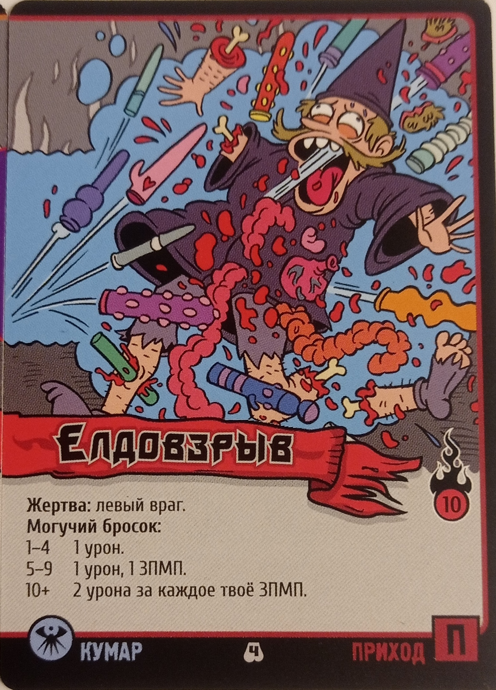
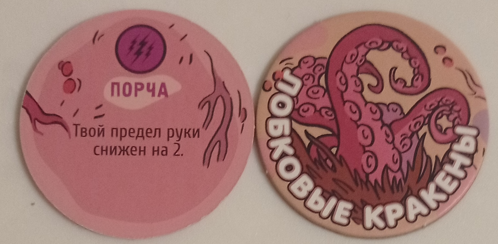
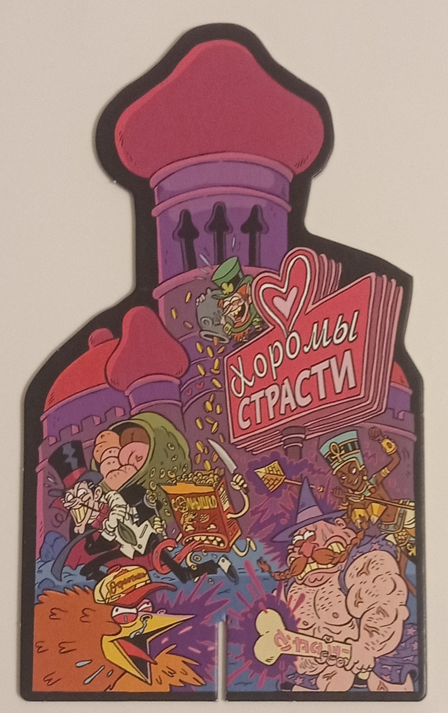
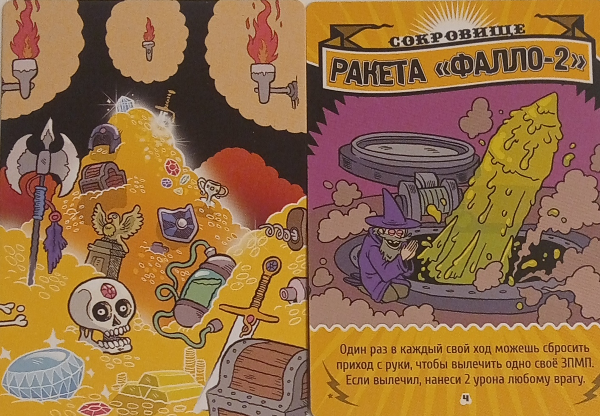
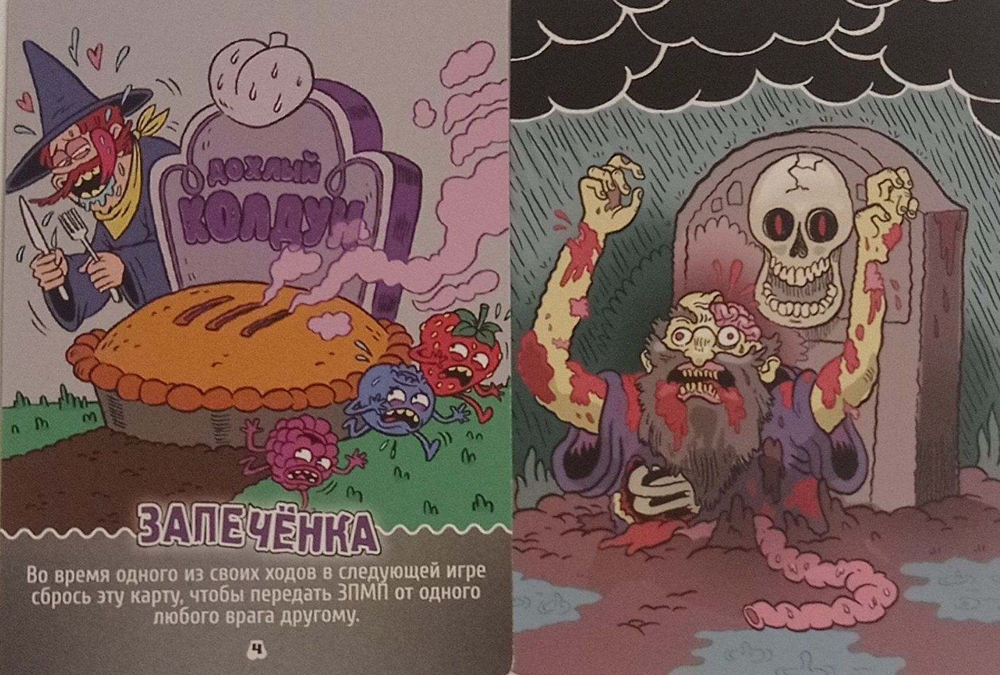

Эпичные схватки боевых магов: ПВХС
«Эпичные схватки боевых магов: ПВХС» – соревновательная карточная настольная игра для 2–6 игроков, в которой вы будете играть за боевых магов и составлять различные заклинания. К слову, существует ещё как минимум четыре издания этой игры, каждое из которых имеет свои особенности и игровые элементы. Но сегодня мы поговорим о версии с пометкой «ПВХС» («Переполох в Хоромах Страсти»). Это издание изобилует шутками на тему венерических заболеваний и секса, а все заклинания и элементы связаны именно с этим. Игра очень забавная, но при этом не менее увлекательная. Да что говорить, когда в правилах сказано, что все заклинания следует произносить эпично, хотя они могут звучать, например, так: «Алчущий Елдовзрыв!» Такая игра просто не может не увлечь! Конечно же, она рекомендована всем!
как проходит игра
После того как вы выберете своего боевого мага (они отличаются лишь внешним видом), можно приступать к игре. Каждый участник берёт восемь карт на руки, затем все сразу начинают собирать заклинание из трёх карт. Всего в игре существуют четыре типа карт, из которых можно создавать заклинания: заводила, наворот, приход и рандом. Заклинание составляется следующим образом: первой идёт карта-заводила, второй — наворот, третьей — приход. То есть любая комбинация должна выглядеть так: заводила → наворот → приход. Если какого-то типа карт не хватает, его можно заменить картой-рандомом. Если и такой карты нет, придётся создать неполное заклинание из двух типов или даже одного. Помните, что они всё равно должны соответствовать порядку комбинации. Все собранные заклинания должны лежать рубашкой вверх. Когда все игроки соберут свои заклинания, наступает момент их исполнения. Сначала читают те, кто собрал самые короткие заклинания, потом — остальные. Порядок чтения зависит от приоритета, указанного на карте-прихода: чем он выше, тем быстрее вы начнёте исполнение. Когда доходит ваша очередь, переверните свою комбинацию карт рубашкой вниз и эпично зачитайте своё заклинание в таком порядке: наворот → приход → заводила. Затем выполняйте всё, что написано на картах. После того как все исполнят свои заклинания, каждый игрок добирает себе карты из колоды, чтобы на руках вновь оказалось восемь карт. Теперь снова все собирают заклинания. Этот цикл продолжается до тех пор, пока не останется один боевой маг, после чего раунд завершится. В партии три раунда. С началом нового раунда все маги восстанавливают своё здоровье (всего у каждого по 20 единиц). Победные очки маги зарабатывают за убийство врагов и за выживание в раунде. Таким образом, игра заканчивается после третьего раунда, когда участники подсчитывают свои победные очки. У кого их окажется больше, тот и станет победителем.
элементы игры и правила
игровое поле

Старый добрый стол + колода карт с заклинаниями, сокровищами и замком.
планшет мага

Планшет мага отображает внешность вашего героя, а на оборотной стороне планшета находится индикатор здоровья.
пример заклинания

Как я упоминал ранее, комбинация карт, составляющих заклинание, строится в определённом порядке: заводила → наворот → приход. По этому же порядку ваше
заклинание и исполняется. Остановимся на карте прихода.

На этой карте вы можете заметить слева внизу значок, обозначающий подвид заклинания. Каждая карта заклинаний обладает своим подвидом.
Если вы составляете комбинацию из карт с одинаковым подвидом, то, по идее, такое заклинание должно стать сильнее. В целом это действительно так,
но работает не всегда. Также посередине, немного ниже названия, вы увидите информацию о том, что делает данная карта. Могучий бросок означает бросок
кубика, количество которых зависит от числа карт с тем же подвидом в вашем заклинании, что и на карте с могучим броском. Справа на карте вы заметите число —
это приоритет, определяющий порядок игроков.
ЗПМП

ЗПМП — это заболевания, передаваемые магическим путём. Их обычно накладывают на игроков посредством заклинаний. ЗПМП ограничивают возможности игрока в
различных аспектах. Например, они могут уменьшить лимит карт на руке, сократить размер вашего заклинания на одну карту, запретить восстановление здоровья и т.д.
Однако не всё так однозначно. Помимо ограничений, ЗПМП даёт вам знак подвида заклинания, который также учитывается при могучем броске. Кроме того, существует
множество заклинаний, использующих ваше ЗПМП в качестве оружия.
замок

Замок можно заполучить благодаря заклинаниям. Игрок, обладающий замком, никаким образом не сможет получить ЗПМП. Правда, не рассчитывайте, что он будет у
вас надолго — существует масса заклинаний, направленных против замка, включая те, которые позволяют отобрать его.
сокровища

Сокровища можно получить с помощью карт заклинаний. Большинство из них являются постоянными и могут дать вам значительное преимущество.
Сокровища также можно отобрать с помощью заклинаний.
колода мертвых колдунов

Если вас убили в одном из раундов, вы начинаете брать карты мёртвых колдунов каждый раз, когда другие игроки пополняют свои руки.
Карты мёртвых колдунов (за исключением тех, на которых написано "Прямо сейчас" — такие карты вы сбрасываете, как только они
попадают к вам в руку) остаются у вас. Эти карты помогут вам получить преимущество в следующем раунде.
Остальные, более глубокие механики игры мы уже разберём по ходу геймплея за столом. :3